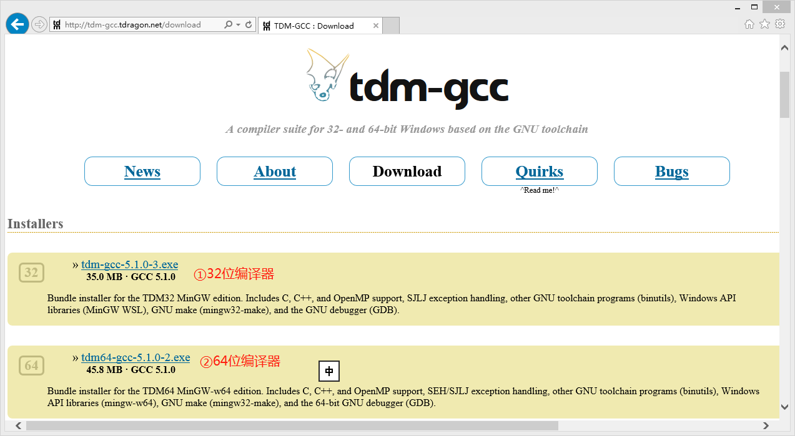
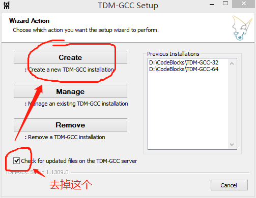
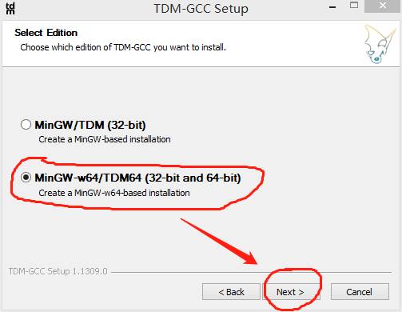
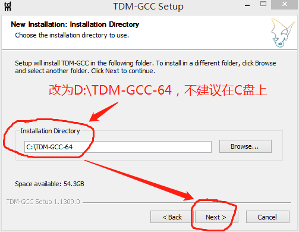
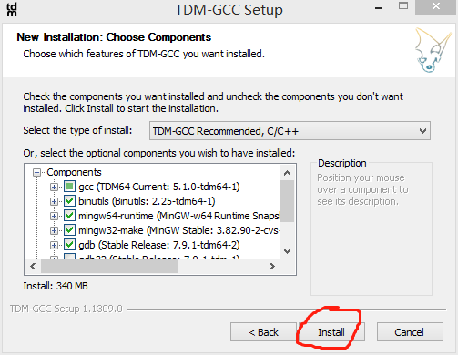
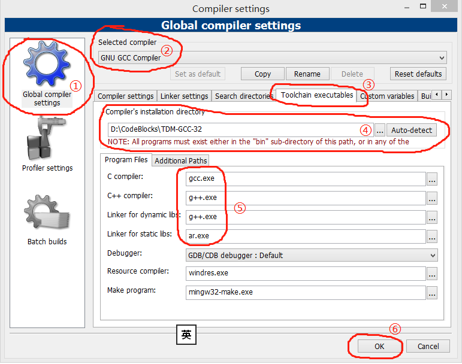
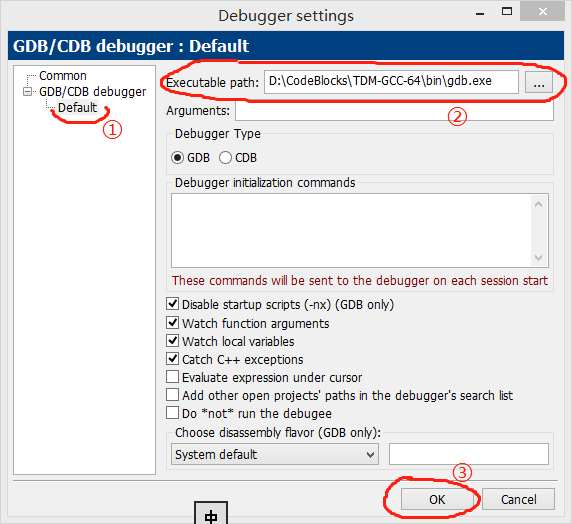

原文连接:https://www.cnblogs.com/lexyao/p/11629467.html
0.前言
随着64位计算机的普及，编写64位程序成为程序员基本的要求。我在《体验Code::Blocks下的C++编程》中描述了利用Code::Blocks官方提供的封装了编译器的安装包（codeblocks-17.12mingw-setup.exe）搭建开发环境编写C++程序的方法。但是，官方提供的安装包中的编译器是32位的，只能用于开发32位程序。如果你想开发64位的程序，就必须自己安装另外的编译器，而不是使用原来在安装包里的。
下面，我就介绍一下利用Code::Blocks搭建64位C++开发平台的操作步骤。按这个步骤搭建的平台可以同时开发64bit和32bit程序。
1.下载安装程序
1.1 下载Code::Blocks开发环境
按着《体验Code::Blocks下的C++编程》中的“1.1 下载Code::Blocks安装程序”下载附图中的①（codeblocks-17.12-setup.exe）。这个安装包只有Code::Blocks，没有编译器和调试器。

1.2 下载编译器和调试器TDM-GCC
下载地址：http://tdm-gcc.tdragon.net/download
这个网站提供32bit和64bit的TDM-GCC。其中，64bit的TDM-GCC可以用来编译和调试32bit和64bit的C++程序。在这里，我们选择下图中的②，即64bit的TDM-GCC（tdm64-gcc-5.1.0-2.exe）。

2. 安装编译器
2.1 安装Code::Blocks和配置默认编译器
按着《体验Code::Blocks下的C++编程》中“1.2 安装Code::Blocks”和“1.3 配置默认编译器”的方法步骤安装和配置编译器。不过，完成这些步骤后还不能进行编译。
2.2 安装编译器TDM-GCC
第一步：运行下载的安装包（tdm64-gcc-5.1.0-2.exe），在第一个界面中选择[Create]。

第二步：选择安装的编译器为 32bit and 64bit

第三步：指定安装位置
默认安装位置是C:\TDM-GCC-64，建议改为D:\TDM-GCC-64
（注：不建议安装在C盘上，我的安装位置是D:\CodeBlocks\TDM-GCC-64）

第四步：选择要安装的组件，开始安装
除非你完全明白你的修改会造成什么影响，否则，建议你保持默认的选项，不要做任何修改。直接点击[Install]就开始安装，你只需要静静地等待安装完成就可以了。

3. 配置编译器和调试器
3.1 配置编译器
你已经安装了Code::Blocks开发环境和TDM-GCC编译器，还需要将TDM-GCC的安装位置告诉Code::Blocks。操作步骤如下：
第一步：打开编译器配置窗口
操作：主菜单->Settings->Compiler，打开的配置窗口如下图

第二步：按途中①②③的顺序点击打开编译器配置页面
第三步：设置编译器安装路径
如果你只安装了一个编译器程序，点击[Auto-detect]即可自动找到并设置路径。否则，你需要点击按钮[…]选择或者直接输入编译器安装路径。
设置后，看到的应该与前面步骤中TDM-GCC的安装路径一致。
第四步：设置工具软件名称
按着Code::Blocks默认的设置，编译和链接程序的文件名都是带有前缀mingw32-的（如mingw32-gcc.exe），去掉前缀，改成图中⑤的模样。
第五步：点击[OK]，保存修改的设置。
3.2 配置调试器
在编写一个程序的工作中，调试需要的时间和精力往往比编写代码多得多。在Code::Blocks配置编译器的方法很简单，你只需要将安装位置告诉Code::Blocks就可以了，剩下的就是你怎么学习使用了。
操作步骤如下：
第一步：打开编译器配置窗口
操作：主菜单->Settings->Debugger，打开的配置窗口如下图

第二步：指定调试器程序路径
你首先点击图中的①Default，出现图中的界面，然后点击②中的按钮[…]从TDM-GCC安装文件夹中选择gdb.exe。
第三步：点击[OK]，保存修改的设置。
4. 测试设置的正确性
按着按着《体验Code::Blocks下的C++编程》中“2.体验用Code::Blocks编写C++程序”讲述的方法，创建hello world程序。只要能得到一致的正确结果，就说明你已经完成了64位C++开发平台的搭建，可以用它来编写你的程序了。
5. 结束语
搭建64位C++开发平台还有其他的方法，我在这里讲述的方法是我认为最简单易学的，也是稳定可靠的。同时，也为了后续讲述其他内容提供一致的方法，避免重负描述。
搭建平台不是目的，编写程序才是程序员想要的。我将在下一篇中讲述如何创建视窗版的hello world程序，以及将同一个程序编译成32位和64位程序的方法。